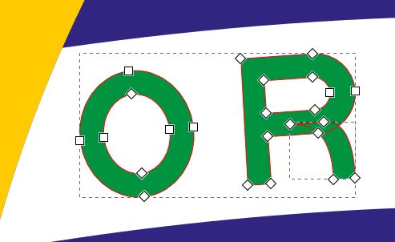

This program is free software: you can redistribute it and/or modify it under the terms of the GNU General Public License as published by the Free Software Foundation, either version 3 of the License, or (at your option) any later version.
This program is distributed in the hope that it will be useful, but WITHOUT ANY WARRANTY; without even the implied warranty of MERCHANTABILITY or FITNESS FOR A PARTICULAR PURPOSE. See the GNU General Public License for more details.
You should have received a copy of the GNU General Public License along with this program. If not, see https://www.gnu.org/licenses/
GT7 Output Extension (GT7OE) is an Inkscape extension that allows you to save and convert any SVG 2.0 designs edited in Inkscape into an SVG 1.1 format that is compatible with the Gran Turismo 7 Livery Editor. The down-conversion is done as faithfully as possible, that means converted designs should visually look like the original design, but under the hood heavy modifications of the SVG DOM tree are performed.
The extension is distributed under GPL 3.0, which means you are free to use this software in a private and commercial context. If you wish to create derivative work (especially adopt the source code for commercial purposes) you are required to either publish your work under a GPL 3.0 compatible license or seek permission from the author.
This will create a file with the extension .gt7 at the location you selected in the Save As dialog. To import this file to the Gran Turismo Livery editor you need to have an account on https://www.gran-turismo.com and follow the instructions there. The Gran Turismo site accepts only files with .svg extension, so you have to rename your file to e.g. <filename>.gt7.svg.
To down convert SVG 2.0 content to SVG 1.1 (with additional restrictions required by Gran Turismo) GT7OE needs to apply a lot of transformations to the original content, many of which are destructive. Hence it is strongly recommended to save content in the default Inkscape SVG 2.0 format for backup and then to export it as .gt7 file. GT7OE saves files with .gt7 extension (instead of .svg) to ensure that you do not accidentially overwrite your original designs.
GT7OE was tested on wide range of different SVG files, but the SVG specification is complex and the conversion may result in a visually different output. You can always load the .gt7 file into Inkscape and edit it manually there to apply corrections, then safe it again as .gt7 file.
The defaults will do well for most designs, but if you wish to tweak or try new parameter settings, here is the explanation of the available fields:
| Option | Meaning | Default |
|---|---|---|
| Strip alpha from gradients | GT7 may reject linear and radial gradients whose color stops are (partially) transparent (alpha channel). When this option is enabled, the stop opacity will be set 1.0 (fully opaque) to ensure compatibility. | True |
| Coordinate rounding (decimal places) |
This option has two effects:
|
3 |
| Gradient mesh subdivision count | Mesh gradient support is experimental. Shapes filled with mesh gradients are subdivided into triangles, each rendered using a linear gradient. A higher subdivision count leads to more and smaller triangls, improving visual quality but increasing file size at the same time. | 4 |
| Compress exported GT7 file | Produces a smaller, minified SVG. Disable this option if you prefer human-readable output. Compression ios not very aggressive, and external SVG compressors may reduce file size by additional 20-40%. | True |
| Support | Feature | GT7OE Conversion | |
|---|---|---|---|
| Geometry elements (<rect>, <circle>, <ellipse>, <polygon>, <polyline>, <line>, <path>) |
Shapes are converted retaining visible geometry and presentation attributes. <rect>, <circle>, and <path> are preserved when possible. All other geometry is converted to <path>.
Because GT7OE removes all transforms, <rect> and <circle> may be replaced by <path> if complex transformations are applied. |
||
| Styles | All styles (inline style attributes and CSS styles under the <style>) section are converted into plain presentation attributes. Presentation attributes ignored by the Gran Turismo 7 Livery Editor are removed to reduce file size. | ||
| Units | All units (mm, cm, in, etc.) are converted to pixel coordinates. | ||
| Strokes |
Stroke attributes are removed if stroke is none or stroke-width is zero to prevent GT7 from showing a default 1-pixel stroke.
Pure strokes (open paths) are retained unless clipping is required. In that case they are converted to closed paths. |
||
| References via <use> | Referenced geometry is expanded and inlined. This may increase file size. | ||
| Clippath | clippaths are resolved by clipping the visual geometry and removing the clippath attribute. | ||
| Linear and radial gradients | Gradients are normalized to user space coordinates (absolute coordinates), which requires to clone the gradient for each shape to which it is applied. This may increase file size. In usual designs the normalization and simplification of gradients will reduce file size. | ||
| Mesh gradients | Mesh gradients cannot be converted to SVG 1.1 without affecting the visual output. GT7OE triangulates shapes filled with mesh gradients and applies a linear gradient following the dominant color change within the triangle. The result usually looks patchy, but with manual post editing you may achieve asseptable results. | ||
| Pattern | Pattern are converted into plain geometry. This will increase file size, but for a reasonable number of tiles within the pattern you may achieve outputs that fit well into the 15 KB file size limitation of Gran Turismo. | ||
| Marker | Marker are converted into plain geometry. This will increase file size. | ||
| Filter | Filter are not supported and will be removed from the file. | ||
| Masks | Masks are not supported and will be removed from the file. |

This file is highly optimized and compressed to 5 KB file size but relies on two SVG features not supported by GT7 - reusing geometry via <uses> and clippaths.
When you safe this file as .gt7 file you will get a file size of 31 KB (without compression) and 25 KB (with compression). During the conversion process your screen may flicker twice, as for technical reasons clipping required to launch an Inkscape process and the file contains two clippaths.
As 25 KB is far beyond the 15 KB threshold of GT7, manual corrections are required. This file is very complex, and while some of the following steps are tedious, it is unusual to have so much manual work.
To simplify geometry and reduce node count we can union similar geometry into a single path. Let's start with the green letters. As you can see they are only partially grouped, which indicates that they have different presentation attributes (like stroke-width) although they look same. Go through the shapes step by step, select a subset, and execute the following steps:

Do the same for the stars.When you select the a star, you will see that due to the expansion of the <use> tags each star is composed of multiple non-closed triangles. You need to select each of these strokes, select the two end points and join them with a new path segment to close the path. When you are finished, select all parts of the star and join them into a single shape (Path > Union). The fastest way to do this in Inkscape is: 1.Activate the node editing tool

<svg xmlns="http://www.w3.org/2000/svg" width="1000" height="700" viewBox="0 0 4200 2940"><path fill="#009440" d="M0 0h4200v2940H0Z"/><path fill="#ffcb00" d="m357 1470 1743 1113 1743-1113L2100 357Z"/><circle cx="2100" cy="1470" r="735" fill="#302681"/><path fill="#fff" d="M1676.83 1155a1785 1785 0 0 0-249.11 17.92 735 735 0 0 0-39.18 112.56 1680 1680 0 0 1 1413.01 403.71 735 735 0 0 0 26.21-116.26A1785 1785 0 0 0 1676.83 1155"/><path fill="#009440" d="m1710.2 1172.47-2.44 69.96 62.96 2.2.46-12.99-50.97-1.78.63-17.99 39.97 1.39.42-11.99-39.98-1.39.49-14 47.97 1.68.46-12.99zm-59.55.27-32.99.58 1.22 69.99 32.99-.58a30 30 0 0 0 29.48-30.52l-.18-9.99a30 30 0 0 0-30.52-29.48m-84.47 3.41-39.9 2.79 3.88 69.9 12.97-.91-1.81-25.94 27.86-1.94c7.06 6.78 7.9 18.8 8.37 25.47l11.97-.83c-.55-7.82-1.61-23-9.25-28.69a22 22 0 0 0-14.09-39.85m236.49.33-6.1 69.73 11.95 1.05 4.18-47.82 9.77 49.04 10.96.96 18.13-46.6-4.19 47.82 11.96 1.04 6.1-69.73-17.44-1.52-18.13 46.59-9.76-49.03zm-333.77 8.99a35.001 31.501 83 0 0-4.3.2 35.001 31.501 83 0 0 8.53 69.48 35.001 31.501 83 0 0-4.23-69.68m180.98.29a19 19 0 0 1 19.33 18.66l.1 6a19 19 0 0 1-18.66 19.33l-19 .34-.77-44zm-83.79 3.43a9 9 0 0 1 1.26 17.95l-26.94 1.89-1.25-17.96zm-97.4 9.32a22 18.5 83 0 1 2.85 43.74 22 18.5 83 0 1-5.36-43.67 22 18.5 83 0 1 2.51-.07m483.58 1.98-10.67 62.09 51.74 8.88 2.03-11.82-39.91-6.86 2.71-15.77 32.52 5.59 2.03-11.83-32.52-5.59 2.4-10.84 38.15 6.65 2.03-11.83zm140.93 20.67-18.68 67.52 12.59 3.26 6.51-25.17 27.11 7.01a22 22 0 0 0 11.01-42.6zm8.18 15.59 26.14 6.76a9 9 0 0 1-4.42 17.43l-26.23-6.76zm81.03 8.39-22 66.46 12.39 3.91 7.82-24.8 26.63 8.39c4.1 8.9.48 20.4-1.54 26.78l11.44 3.61c2.36-7.48 6.94-22 1.9-30.09a22 22 0 0 0 1.51-42.23zm7.53 16 25.76 8.12a9.003 9.003 0 0 1-5.42 17.17l-25.75-8.12zm100.63 21.53a35.001 31.5-69.5 0 0-16.09 67.33 35.001 31.5-69.5 0 0 24.51-65.57 35.001 31.5-69.5 0 0-8.42-1.76m-1.07 13.02a22 18.5-69.5 0 1 4.94.92 22 18.5-69.5 0 1-15.14 41.21h-.27a22 18.5-69.5 0 1 10.47-42.13m82.69 21.22a35 31.5-66.5 0 0-15.31 66.38 35 31.5-66.5 0 0 23.47-.07l-3.76 8.64 9.17 3.99 9.97-22.93 3.98-9.15.01-.01a35 31.5-66.5 0 0 0-.01l-9.17-3.98-2.75-1.2-12.38-5.38-3.99 9.17 10.53 4.58a22 18.5-66.5 0 1-19.9 4.43 22.002 18.502-66.5 0 1 17.55-40.35 22 18.5-66.5 0 1 10.23 15.35l12.91 5.62a35 31.5-66.5 0 0-17.96-32.89 35 31.5-66.5 0 0-12.6-2.19m69.17 27.69-32.13 62.19 11.63 5.81 11.61-23.27 25.05 12.49.02.01c2.63 9.42-2.82 20.19-5.8 26.16l10.74 5.35c3.48-6.98 10.22-20.49 6.64-29.28a22.003 22.003 0 0 0 8.04-41.62zm4.94 16.98 24.16 12.05a9.001 9.001 0 0 1-8.03 16.11l-24.16-12.05zm76.64 24.55-34.47 60.93 54.83 31.02 6.41-11.31-44.39-25.12 8.86-15.66 34.82 19.69 5.91-10.44-34.01-19.7 6.09-12.18 41.77 23.63 6.4-11.31zm85.45 55.02c-5.66-.08-11.25 2.17-15.66 8.92-13.64 20.95 30.62 38.48 22.96 50.5-2.42 3.79-8.16 3.98-16.6-1.39s-12.25-11.95-8.49-17.86l-13.28-8.46c-9.44 14.73 5.05 29.3 14.75 35.48 11.38 7.25 28.44 13.97 38.25-1.42 13.3-20.87-30.08-39.32-23.56-49.1 3.89-6.11 9.21-4.21 15.74-.05 6.75 4.3 11.18 10.38 7.14 16.71l12.87 8.19c9.48-14.41-2.71-26.93-10.3-31.76-4.74-3.02-14.39-9.63-23.82-9.76m75.05 50.63c-4.94.21-9.82 2.41-13.99 8.1-14.72 20.21 28.75 40.03 20.29 51.63-2.62 3.66-8.35 3.56-16.5-2.25s-11.61-12.58-7.54-18.28l-12.83-9.14c-10.2 14.22 3.51 29.52 12.87 36.2 10.99 7.84 27.68 15.44 38.28.59 14.37-20.15-27.72-40.85-20.96-50.27 4.21-5.9 9.41-3.72 15.72.78 6.52 4.64 10.62 10.95 6.62 17.05l12.06 8.86c10.22-13.9-1.29-27.04-8.62-32.26-4.59-3.26-13.87-10.36-23.28-10.99-.71-.04-1.42-.05-2.12-.02m76.42 58.73a35 31.5-51.5 0 0-23.14 61.01 35.001 31.501-51.5 1 0 43.58-54.78 35 31.5-51.5 0 0-20.44-6.23m2.82 12.92a22.002 18.502-51.5 0 1 9.52 3.48 22.002 18.502-51.5 0 1-27.39 34.44 22.002 18.502-51.5 0 1 17.87-37.92"/><path fill="#fff" d="m2328 1210.5-7.07 21.77h-22.53l18.18 13.39-7.09 21.82 18.61-13.52 18.41 13.52-7.07-21.76 18.52-13.45h-22.89zm-828 96-7.07 21.77h-22.53l18.18 13.39-7.09 21.82 18.61-13.52 18.41 13.52-7.08-21.76 18.53-13.45h-22.89zm800 105.5-4.72 14.51h-14.98l12.12 8.85-4.76 14.63 12.34-8.96 12.34 8.96-4.72-14.51 12.35-8.97h-15.25zm-480 61.75-5.89 18.14h-18.71l15.08 11.14-5.91 18.21 15.42-11.22 15.44 11.22-5.9-18.14 15.43-11.21h-19.07zm280 88-5.9 18.14h-18.8l15.18 11.16-5.91 18.19 15.43-11.21 15.43 11.21-5.89-18.14 15.43-11.21h-19.07zM1637 1587l-3.36 10.37h-10.91l8.82 6.41-3.37 10.35 8.82-6.4 8.82 6.4-3.37-10.36 8.82-6.4h-10.9zm-72 28.5-7.07 21.77h-22.53l18.17 13.39-7.08 21.82 18.61-13.51 18.41 13.51-7.07-21.77 18.52-13.44h-22.89zm620 12.25-5.9 18.14h-18.8l15.18 11.17-5.91 18.18 15.43-11.21 15.43 11.21-5.89-18.13 15.43-11.22h-19.07zm-159 5.25-4.72 14.51h-14.98l12.12 8.85-4.76 14.63 12.34-8.96 12.34 8.96-4.72-14.51 12.35-8.97h-15.25zm-551 53.75-5.89 18.14h-18.81l15.17 11.16-5.9 18.19 15.43-11.21 15.43 11.21-5.89-18.14 15.43-11.21h-19.08zm588 3.25-3.37 10.37h-10.9l8.82 6.4-3.37 10.36 8.82-6.4 8.82 6.4-3.37-10.36 8.82-6.4h-10.9zm-345 3.75-5.89 18.14h-18.71l15.08 11.15-5.91 18.2 15.43-11.21 15.43 11.21-5.89-18.14 15.42-11.21h-19.07zm897 2.75-7.07 21.77h-22.53l18.18 13.39-7.09 21.82 18.61-13.52 18.41 13.52-7.07-21.75 18.52-13.46h-22.89zm102 17.5-4.72 14.51h-14.98l12.12 8.85-4.76 14.63 12.34-8.96 12.34 8.96-4.72-14.51 12.35-8.97h-15.26zm-72 52.75-5.9 18.14h-18.8l15.18 11.17-5.91 18.18 15.43-11.21 15.43 11.21-5.89-18.13 15.43-11.22h-19.07zm-545 1.75-7.07 21.77h-22.53l18.18 13.39-7.1 21.82 18.62-13.52 18.42 13.52-7.08-21.76 18.52-13.45h-22.9zm-404 3.5-4.72 14.51h-14.98l12.12 8.84-4.76 14.64 12.34-8.97 12.34 8.97-4.72-14.51 12.35-8.97h-15.26zm904 53.75-5.89 18.14h-18.81l15.17 11.16-5.9 18.19 15.43-11.2 15.43 11.2-5.89-18.14 15.43-11.21h-19.08zm-795 2.75-7.07 21.77h-22.53l18.18 13.39-7.09 21.82 18.61-13.51 18.41 13.51-7.07-21.76 18.52-13.45h-22.89zm660 25.5-4.72 14.51h-14.98l12.12 8.85-4.76 14.63 12.34-8.96 12.34 8.96-4.71-14.51 12.34-8.97h-15.26zm-203 7-4.72 14.51h-14.98l12.12 8.85-4.76 14.63 12.34-8.97 12.34 8.97-4.72-14.51 12.35-8.97h-15.25zm279 7-4.72 14.51h-14.98l12.11 8.84-4.75 14.64 12.34-8.96 12.34 8.96-4.72-14.51 12.35-8.97h-15.25zm-158 11-4.72 14.51h-14.98l12.12 8.84-4.76 14.64 12.34-8.96 12.34 8.96-4.72-14.5 12.35-8.98h-15.25zm85 41.75-5.9 18.14h-18.8l15.18 11.17-5.91 18.18 15.43-11.21 15.43 11.21-5.89-18.14 15.43-11.21h-19.07zm-148 18-5.9 18.14h-18.8l15.18 11.17-5.91 18.18 15.43-11.21 15.43 11.21-5.89-18.14 15.43-11.21h-19.07zm147 61.25-4.72 14.51h-14.98l12.12 8.85-4.76 14.63 12.34-8.96 12.34 8.96-4.72-14.51 12.35-8.97h-15.26zm-367 34.5-2.35 7.26h-7.55l6.45 4.73-2.72 7 6.17-4.48 6.17 4.48-2.36-7.25 6.18-4.48h-7.64z"/></svg>